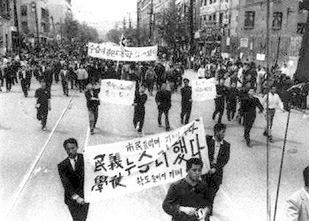

4·19 혁명(四一九革命) 또는 4월 혁명(四月革命)은 1960년 3월 15일에 실시된 대통령과 부통령 선거에서 자유당 정권이 이기붕을 부통령으로 당선시키기 위한 개표조작을 하자, 이에 반발하여 부정선거 무효와 재선거를 주장하는 학생들의 시위에 대규모의 시민들이 참여하며 전국적으로 확대된 반독재투쟁이자 혁명을 말한다. 부정 선거 당시 이승만 정부와 자유당은 4할 사전 투표, 투표함 바꿔치기 등의 부정을 저질렀다.
전국민적 저항과 군지휘부의 무력동원 거부에 봉착한 대통령 이승만이 4월 26일 하야를 발표함으로써 이승만의 자유당 정권은 몰락하였고, 이 혁명의 결과로 과도 정부를 거쳐 6월 15일(6·15 개헌)에 제2공화국이 출범하였다.